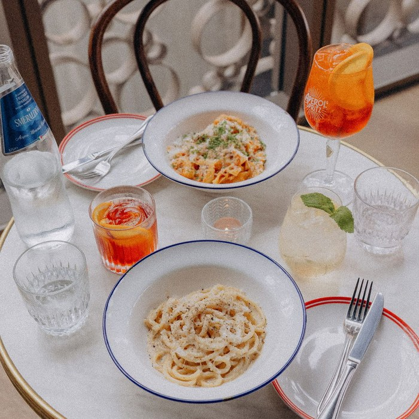
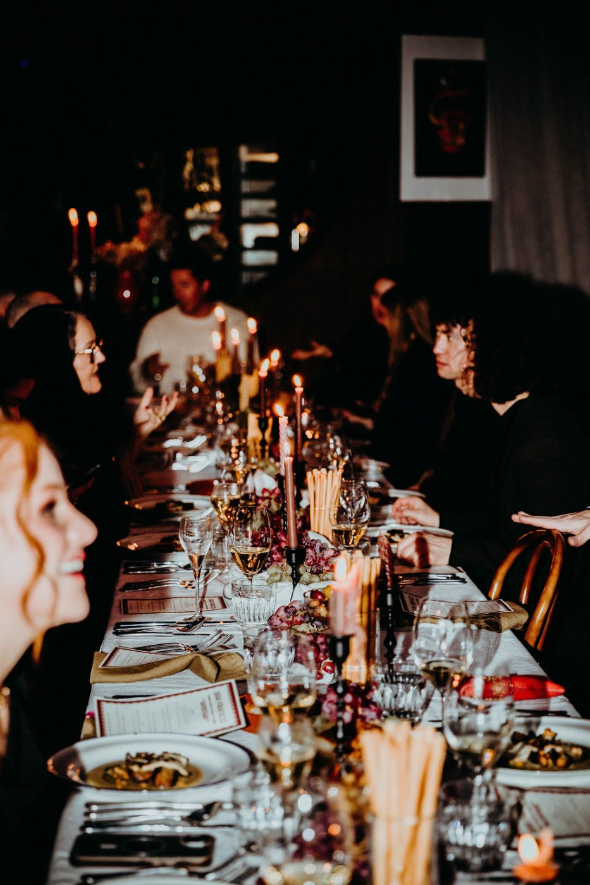
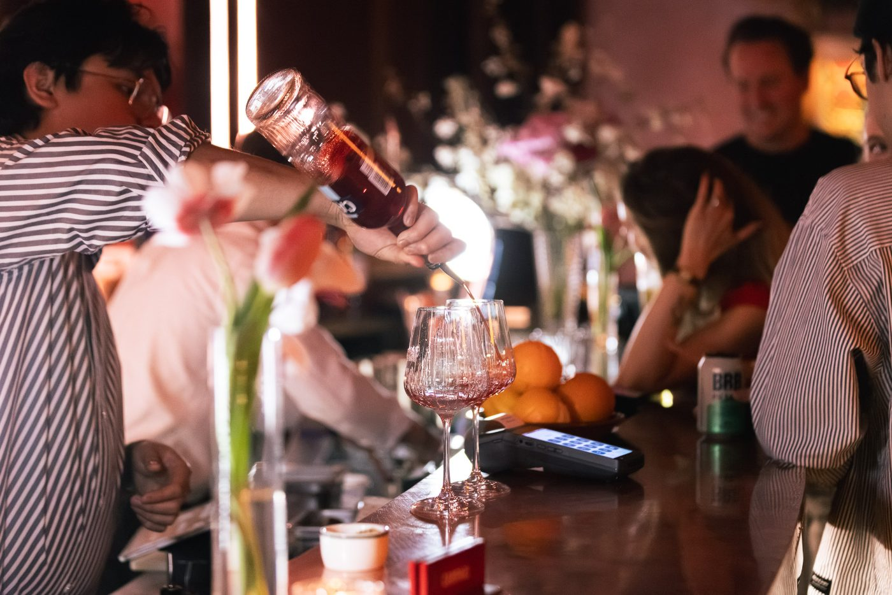
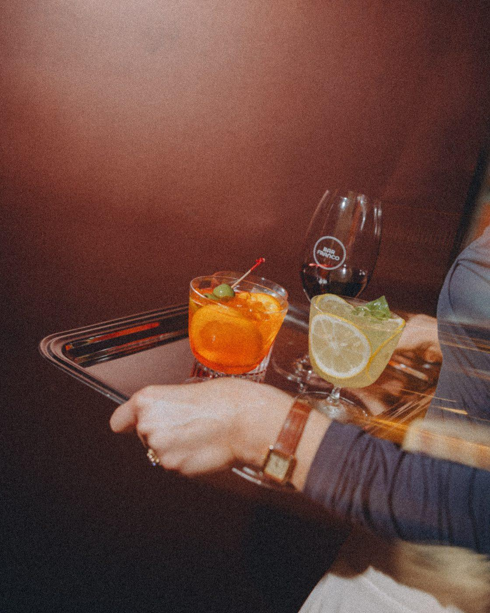
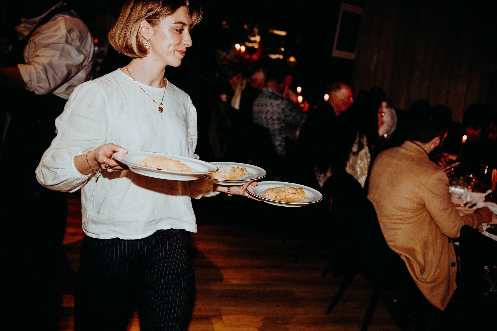
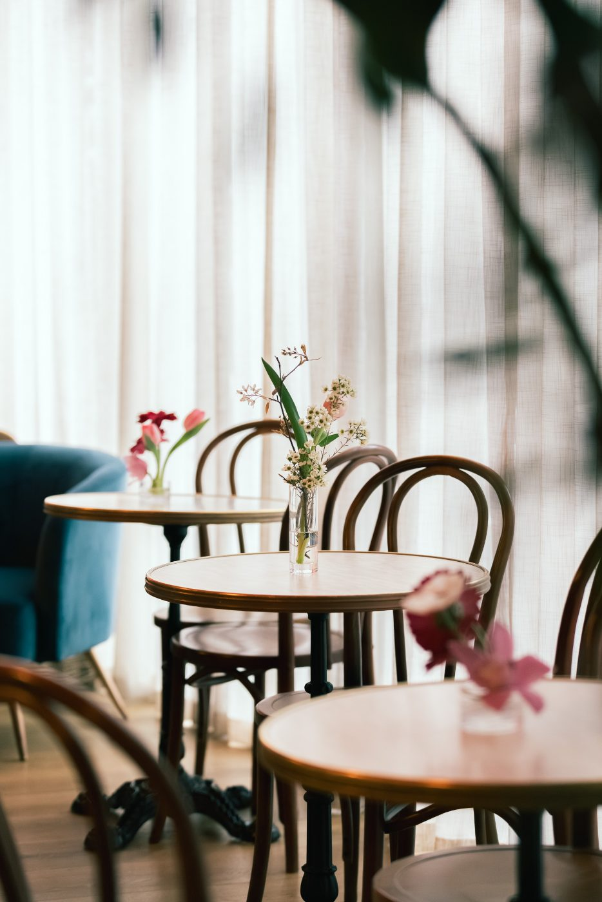
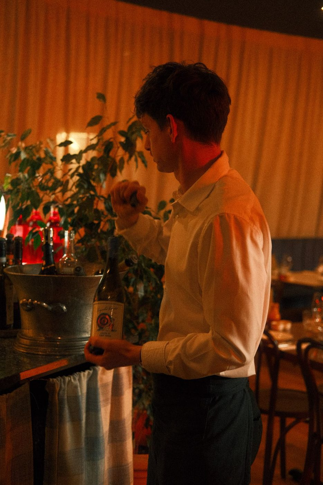
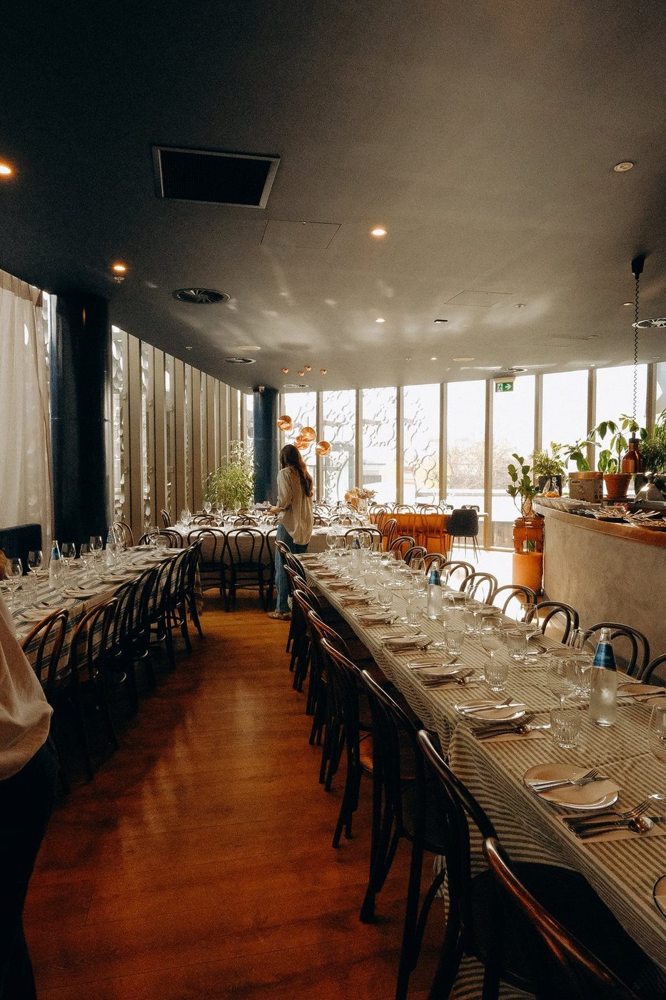

Events pack · 2026
Events with flavour. Nights with feeling.
166 Cashel St, Ōtautahi




In this pack · hover or tap a chapter and it opens underneath

Bar Franco · 01 · Benvenuti, welcome
From a table for twenty to the whole building.
Tell us the date. We’ll handle the rest.

The food
Italian and house-made, pasta included, changing with the season.
The rooms
A Negroni & Spritz Bar downstairs. An open-kitchen restaurant upstairs.
The hosting
A dedicated team runs the night, from the first spritz to last drinks.
The first thing everyone asks
No venue hire fee.
You spend on food and drink, and that’s it. For exclusive use there’s a minimum spend, set by the night and the space. Sunday to Thursday, there’s usually none at all.
Bar Franco · 02 · The spaces
Two levels. One world.
Level 1 · downstairs
Negroni & Spritz Bar
Booths, high leaners and low tables around a lovely big bar. Sheer-draped windows, candlelight, and room for a DJ, a band and dancing.
Seated80 · more with hired-in furniture
Standing120
Level 2 · upstairs
The Restaurant
The theatre of Italian cooking, straight from the open kitchen. Long tables, plus a private dining area at the far end.
Seated90 · 120 with hired-in furniture
Standing120
Spaces at a glance
Every space works for every kind of night. Every event is different, so we tailor everything to you.
Smaller groups · lunches
Not a function room. A place to host.
For smaller groups, the bar or the private dining area in the Restaurant.
Private dining area
A gorgeous table at the far end of the Restaurant, curtained off when you want it private.
Up to 20 guests · no minimum spend
Group dining
Soak up the full buzz of the venue. We seat your group together, upstairs in the Restaurant or downstairs in the bar.
About 16–30 guests · either level · no minimum spend
Private lunches
Always available. A long, leisurely lunch, then afternoon drinks in town. Long, slow and very Italian.
Either level · priced on request
The most-loved flow
Three chapters instead of one long sit-down.
Chapter 01
In the bar
Welcome drinks and canapés in the Negroni & Spritz Bar.
Chapter 02
Upstairs
A seated dinner in the Restaurant, with the open kitchen in full swing.
Chapter 03
Back down
Dessert and dancing. While you dine, we turn the bar into a dance floor.

Bar Franco · 03 · Food · we cook like someone’s coming home
Three ways to feed the room
Pick one and its menu opens underneath. Grazing tables from 40 per person · custom menus available · all prices exclude GST.
Formatstanding, passed on trays
Allow4–6 pieces per guest, or leave it to the chef
Adda grazing table, from 40 per person
Bites9 each
Goats cheese croquettes, chilli honeyV
Seasonal arancini, pickled chilli, parsley mayonnaiseV · GFA · DFA
Nonna’s meatballs, tomato sugo, parmesan, basilGFA · DFA
Market fish crudo, orange, Sicilian olive, lemon oilGF · DF
Oysters, seasonal mignonetteGF · DF
Potatoes, parsley mayonnaiseGF · DF
Caprese skewer, bocconcini, tomatoV · GF · DFA
Melon, prosciuttoGF · DF
Focaccia sliders11 each
Mortadella, smoked provolone, rocket, sugo, balsamic onionsDFA · GFA
Marinated eggplant, smoked provolone, rocket, sugo, balsamic onionsV · DFA · GFA
Crostini, whipped ricotta, pickled tomatoesV
Piadini11 each
Whipped ricotta, pesto, peperonataV · VA · GFA
White anchovy, gremolataDF · GFA
Prosciutto, stracciatella, rocket, balsamic glazeDFA · GFA
Grazing table40 per person
Or a set amount, 1,000 minimum · 1,500 · 2,000
On arrivala chef’s-choice trio of canapés
At the tablethe Shared Franco menu
Formatstanding to start, then seated
On arrival
A chef’s-choice trio from the canapés list, passed as guests arrive
At the table
Focaccia · Antipasto misto · Stracciatella, peperonata, fig and pistachio agrodolce
Pork ragù lasagne · Porchetta · Patate arrosto · Fennel and citrus salad
To finish
Tiramisu · Strawberry sorbet
Vegetarian and dairy-free swaps are built in. All prices exclude GST.
Dietaries · custom menus
No one goes hungry at Bar Franco.
Every dietary
Coeliac, vegan, allergies: all of them. Send the list with guest names alongside your final numbers. Each guest gets their own labelled plate and a check-in from the team.
Custom menus
For food and drinks. Tell us what you have in mind and we’ll build it. Anything we order in specially is charged in full, for the whole amount ordered.
Served to share
For groups, everything is served to share and arranged ahead, so everyone eats together and the night flows. Food isn’t ordered on the night.
The little things
Pasta, arancini, meatballs or pizza for little ones. Leftovers packed to take home. Printed menus with your logo or a custom heading.
V vegetarian · VA vegan available · GF gluten free · GFA gluten free available · DF dairy free · DFA dairy free available
Nuts in the stracciatella (pistachio agrodolce) · egg in the parsley mayo, left out on request · gluten-free swaps are confirmed with the kitchen before service.

Bar Franco · 04 · Drinks · charged on consumption
It starts with a Negroni.
On consumption
You pay for what’s poured. No packages, no subsidised drinks, and no BYO.
The bar tab
Choose 6 wines, 6 cocktails, 4 beers and 4 non-alcoholic drinks. Spirits and mixers are your call.
Cash bar, too
Run a tab with a limit, a cash bar, or both. We keep you posted on the spend all night.
Welcome drink
Required for 30 guests or more, so no one queues at the bar. The Aperol Spritz rarely loses.
Make it yours
A house cocktail renamed after you, an Aperol or champagne tower, or bubbles poured and waiting.
Pick your tab from here
The bar list
Choose 6 wines, 6 cocktails, 4 beers and 4 non-alcoholic drinks. Spirits and mixers are your call. Charged on consumption. Eight wines pour by the glass on the night; the rest are bottle-only, made for the table.

Bar Franco · 05 · Pricing · all prices exclude GST
Minimum spends
Friday and Saturday nights
Negroni & Spritz Barfrom 4,000
The Restaurantfrom 7,500
The whole venuefrom 15,000
Any other time
Sunday to Thursday, any spaceusually none
Private luncheson request
How it works
The host covers the minimum spend through food and a bar tab, arranged ahead. Once it’s met, the bar switches to cash.
Drinks bought at the public bar beforehand don’t count. November and December are the dearest months, and your proposal gives the exact figure.
No venue hire fee, and all of this
The room is yours.
Included
Set-up and pack-down
A dedicated team: one server per 10 guests, plus a manager
Candlelight, low lighting and olive branches
Personalised menus, with your logo if you like
Your décor, name cards and seating plan, set out by us
Projector, screen and handheld microphone
Our sound system, for your playlist, DJ or band
Extras
Cakeage50
Security for 18ths and 21stsat cost
Linen hire25 a cloth
Grazing tablefrom 40 pp
Bigger AV set-upsquoted
Security is quoted in your proposal. Bigger AV goes through our AV partner. Linen is hired in for you.

Deposits and payments
Securing your date
We pencil your date in while you decide. It goes to whoever confirms first.
To confirm
A non-refundable deposit, taken off your drinks bill.
Minimum spend under 7,000500 + GST
7,000 to 10,0001,000 + GST
Over 10,0001,500 + GST
If plans change
Full terms are in our Venue Hire Agreement.
30+ days outwe keep the deposit
14–30 days out50% of the minimum spend
Under 14 days100% of the minimum spend
5 days before
Final numbers and dietaries are due, and we invoice your food on those numbers. Late additions are welcome; numbers can’t go down.
On the night
Drinks are settled at the end of the night, or invoiced after the event, less your deposit.

Bar Franco · 06 · From first email to last drinks
How it works

Bar Franco · 07 · Good to know
Planning notes
Access
Someone’s on site from 3:30pm every day. Decorations, flowers and cake arrive from 3:30pm on the day. Earlier set-up or suppliers by arrangement.
Decorations
Balloons, flowers, signage, banners and photo booths are all welcome. Vinyl stickers must peel off cleanly. Sharing plates leave little room for big centrepieces.
Cake
Cakeage is $50, and our chefs slice and serve it on platters (allow about 30 minutes). Bring your own candles. There’s no fridge space the day before.
Music
Our playlist, your Spotify over Bluetooth, or a DJ, duo or band on our sound system.
AV
A handheld mic, projector and screen, at no charge (there’s no TV). Bring a laptop and HDMI cable, or send the file ahead. Bigger set-ups go through our AV partner.
Getting here
166 Cashel Street, The Crossing. Take the lift near H&M and KOOKAÏ, or the stairs. The Crossing carpark is right there. On request, we’ll sign the lift and greet guests at the door.
House rules
The fine print
18ths and 21sts
We host them, a little differently. A security guard is required, charged at cost. Over-18s wear wristbands, which you supply, and ID is checked at the door.
Children
Under-18s are welcome at private events, with a parent or legal guardian beside them.
Timings
Last drinks at 11:30pm, doors close at midnight. Until then, the night is yours.
Christmas
We keep it Italian. December books out fast, so enquire early. We’re closed from 23 December to 5 January.
GST
All prices exclude GST.
Bar Franco · 08 · Suppliers we love
Friends of Franco
Bring your own, or lean on the people we already work with.
FlowersA Little Bit Floral · Tholsie & Co
CakesFull Time Tart
Live musicVintage Blue
BackdropsBlank Space Events
AVShipleys
SecurityOctober Protection
Stay nearbyBreakFree on Cashel · The Observatory · Crowne Plaza
Ti aspettiamo, we’re waiting for you
Send us the date and the numbers.
Jenna’s in Monday, Wednesday and Friday. Can’t reach her? Ana-Maria will come straight back to you.
Find us
166 Cashel Street, The Crossing, Christchurch. Lift near H&M and KOOKAÏ.
Come in
Any day from 3:30pm, for a drink on us and a walk through both levels.